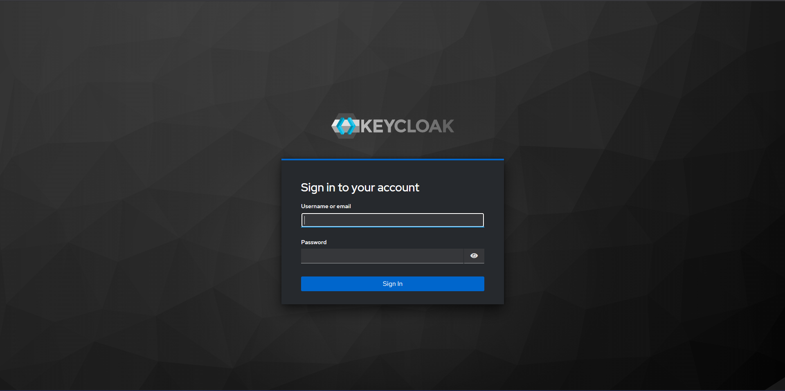
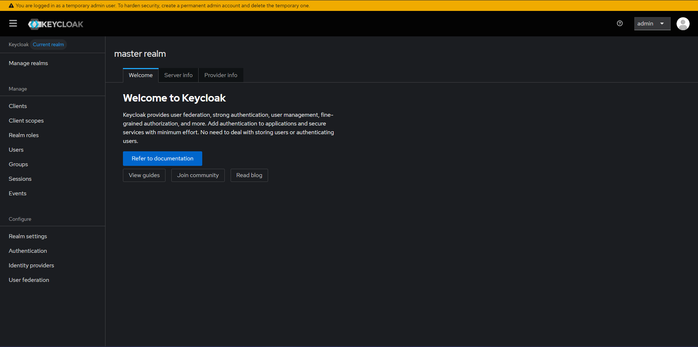

Keycloak es un producto de software de código abierto que permite el inicio de sesión único con gestión de identidades y accesos, diseñado para aplicaciones y servicios modernos.
El patrón BFF hace referencia al concepto de Backend For FrontEnd. Cuando nosotros diseñamos muchas de nuestras aplicaciones nos encontramos en situaciones en las que tenemos diseñado un FrontEnd realizado en JavaScript contra un Backend desarrollado en la tecnología que nos plazca pero muchas veces enfocado a Servicios REST . En muchos casos el BackEnd esta diseñado de una forma neutra es decir publica una información de la que cualquier cliente puede beneficiarse . Eso sí cada cliente dispondrá de un interface de usuario diferente a otros . Al publicar la información de forma muy neutra todos los clientes se adaptarán a ella , pero cada uno de los cuales necesitará realizar un esfuerzo diferente para cargar los datos necesarios que presenta. Fuente: ArquiteturaJava
Usando un patron BFF en nuestro Backend tenemos las siguientes ventajas
Para esta practica, usaremos una instancia de desarrollo de Keycloak, para esto, utilizaremos docker con la imagen oficial de Keycloak. Para esto, usaremos el siguiente comando:
docker run -p 3030:8080 -e KC_BOOTSTRAP_ADMIN_USERNAME=admin -e KC_BOOTSTRAP_ADMIN_PASSWORD=admin quay.io/keycloak/keycloak:26.2.5 start-dev
La primera vez que realicemos este proceso, puede que tarde un poco, ya que se tendra que descargar la imagen a utilizar. Una vez que la imagen haya sido descargada y que la instancia este corriendo, accederemos a la siguiente ruta
En la que debera verse la siguiente pantalla

Una vez en esta pantalla, necesitamos las credenciales que hemos determinado en el comando de la creacion de instancia
KC_BOOTSTRAP_ADMIN_USERNAME=admin -e KC_BOOTSTRAP_ADMIN_PASSWORD=admin
En estos parametros es donde se definen las crecenciales de nuestro usuario temporal. Por tanto, nuestras credenciales seran:
admin
admin
Si hemos ingresado los datos correctamente, deberiamos acceder a la siguiente pantalla

Tablas
Columna 1 | Columna 2 |
Valor 1 | Valor 2 |